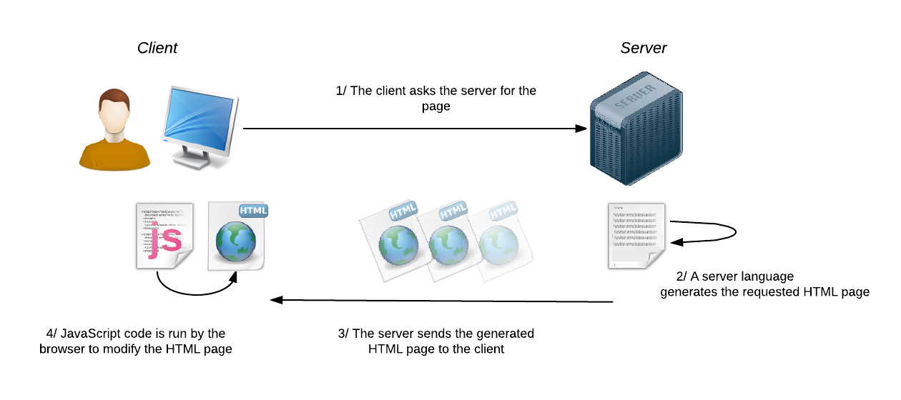

Node.js Prt 1
F28WP Web Programming
2020-2021
## Overview * **What** is Node.js? * What is so good/bad about Node.js * How do we get **started** with Node.js * Libraries and examples * Questions and discussion <aside class='notes'> </aside>
## Revision Question In localStorage object data ________ * A) is deleted after the browser has been closed * B) is not deleted after the browser has been closed * C) can be seen but can not edited * D) can be seen as well as edited
## Answer * Answer **B)** is not deleted after the browser has been closed --- Explanation: Data with no expiration date is stored by localStorage object. Here the data is not deleted if we close the browser. We can have data at the next day or week or year. ``` localStorage(“firstname”,”Tanya”); alert( localStorage.getItem(“firstname”) ); ```
## Revision Question What is the web storage limit of character storage for chrome 30.0 in localStorage? * A) unlimited * B) none * C) 1021 k * D) 4.98 M
## Answer * Answer **D)** 4.98 M --- For chrome 18.0 it is unlimited i.e. can store any number of characters, for chrome 19.77 it is 1021 k, for chrome 22.0 it is 2.49 M, for chrome 24.0, 25.0, 27.0 it is 2.49 M, for chrome 28.0, 30.0, 31.0 and 31.1 it is 4.98 M.
## Revision Question For Web Storage clearing all the localStorage settings which function should be called? * A) localStorage.remove(key) * B) localStorage.clear() * C) localStorage.remove() * D) localStorage.clearAll()
## Answer * Answer **B)** localStorage.clear() --- Note same can be applied with sessionStorage also the syntax will be sessionStorage.clear().
## Revision Question Which of the following returns the number of value pairs in local Web Storage? * A) localStorage.key(n) * B) localStorage.length * C) localStorage.setItem(key,value) * D) localStorage.clear()
## Answer * Answer **B)** localStorage.length --- localStorage.length returns number of value pairs that are currently present in the list, storage.key(n) returns name of nth key from the list
## Node.js * Node.js is an open source server-side environment * Node.js allows you to run **JavaScript** on the server <aside class='notes'> </aside>
## Node.js * Node.js is **open source**, high performance JavaScript server - executing on top of Google’s V8 engine * Node.js supports high throughput, real-time, scalable use - via **asynchronous and event driven** API calls - running as a single non-blocking thread - without buffering data - it is output in chunks * However, Node.js is **not** suitable for CPU intensive applications <aside class='notes'> </aside>
## Node.js * Node is free and open source * http://nodejs.org * Available for download and testing <aside class='notes'> </aside>
How Node.js Works

## Command Prompt * Note you can download and install Node.js * Run Node.js from the command prompt to test examples/exercises * Node.js comes bundled with a **REPL** (**R**ead **E**val **P**rint **L**oop) - an interactive environment like Windows cmd or Linux terminal * REPL is very useful in experimenting with Node.js ``` \>node > console.log("Hello Node") Hello Node > >var a = 2; >a + 3 5 ``` * Also run via online Node simulators - e.g., https://repl.it/languages/nodejs <aside class='notes'> </aside>
## Command Prompt ``` \>node > console.log("Hello Node") Hello Node ``` * Expressions with no value get **undefined** reply/return * Exit the command prompt - Two Control C's are required to stop the interpreter <aside class='notes'> </aside>
Example
Example
Type: console.log('test');
Select: Run
repl
## Node.js HTTP Module * HTTP handler index.js serves single web page on port 8080 * Use the **require** directive to load a module * ```createServer()``` registers callback that’s run by request event ``` var http = require("http"); var svr = http.createServer(function (request, response) { response.writeHead(200, { "Content-Type": "text/plain" }); response.end("Hello Web World"); }) .listen(8080); //the server object listens on port 8080 ``` <aside class='notes'> </aside>
Example
CodeSandbox.io
## Node Packages * Node modules are managed by the Node Package Manager **npm** ``` var express = require("http"); ``` <aside class='notes'> </aside>
## **What** are the advantages of using Node.js? * Node.js makes building scalable network programs easy. Some of its advantages include: >1. It is generally **fast** 2. It almost **never blocks** 3. It offers a **unified** programming **language** and data type 4. Everything is asynchronous 5. It yields great concurrency <aside class='notes'> </aside>
## **Why** use Node.js? * Provides an **easy** way to build **scalable** network programs * Node is **open source** * Node provides a **rich library** of various JavaScript modules - simplifies the development of web applications <aside class='notes'> </aside>
## Synchronous vs Asynchronous * **Synchronous** - Wait for each operation to finish - Step by step execution * **Asynchronous** - **No** need to **wait** for the operation to finish - Results handled as available - Callbacks used to handle results <aside class='notes'> </aside>
## **Synchronous** Example ``` var result = database.query("SELECT * FROM bigtable"); console.log("db operation is done"); console.log("Hello World"); ``` Output ``` db operation is done Hello World ``` <aside class='notes'> </aside>
## **Asynchronous** Example ``` database.query("SELECT * FROM bigtable", function(rows) { var result = rows; console.log("After db operation"); }); console.log("Hello World"); ``` Output ``` Hello World db operation is done ``` <aside class='notes'> </aside>
## Non - Blocking I/O * Use events * Never wait for I/O * I/O is expensive ``` file.read('file.txt', function(data){ process(data); return success; }); DoWhatYouWantWhileWaiting(); ``` <aside class='notes'> </aside>
## **Who** uses Node.js? <aside class='notes'> </aside>
Who uses Node.js?
## Where to start? * Try running NodeJS from the command prompt (node.exe) - Test out commands (Javascript) * Try out online editor/sandbox for NodeJS - https://codesandbox.io/ * Example - Realtime NodeJS Collaborative Drawing Demo - Socket.io Package - https://codesandbox.io/s/rwk72n5v4m?from-embed <aside class='notes'> </aside>
## Summary * Understand **Node.js** * Basic principles * **Who** and **What** of Node.js * Examples <aside class='notes'> </aside>
## To do this week ... * Read over the lectures <br> * Review the revision questions <br> * Work through tutorial practicals <br> * **Experiment** (get into good habits) <br> * Read Node.js Tutorial http://www.tutorialspoint.com/nodejs/ * Browse **Node.js Website** https://nodejs.org/ * Test out examples on **CodeSandbox.io** <aside class='notes'> </aside>